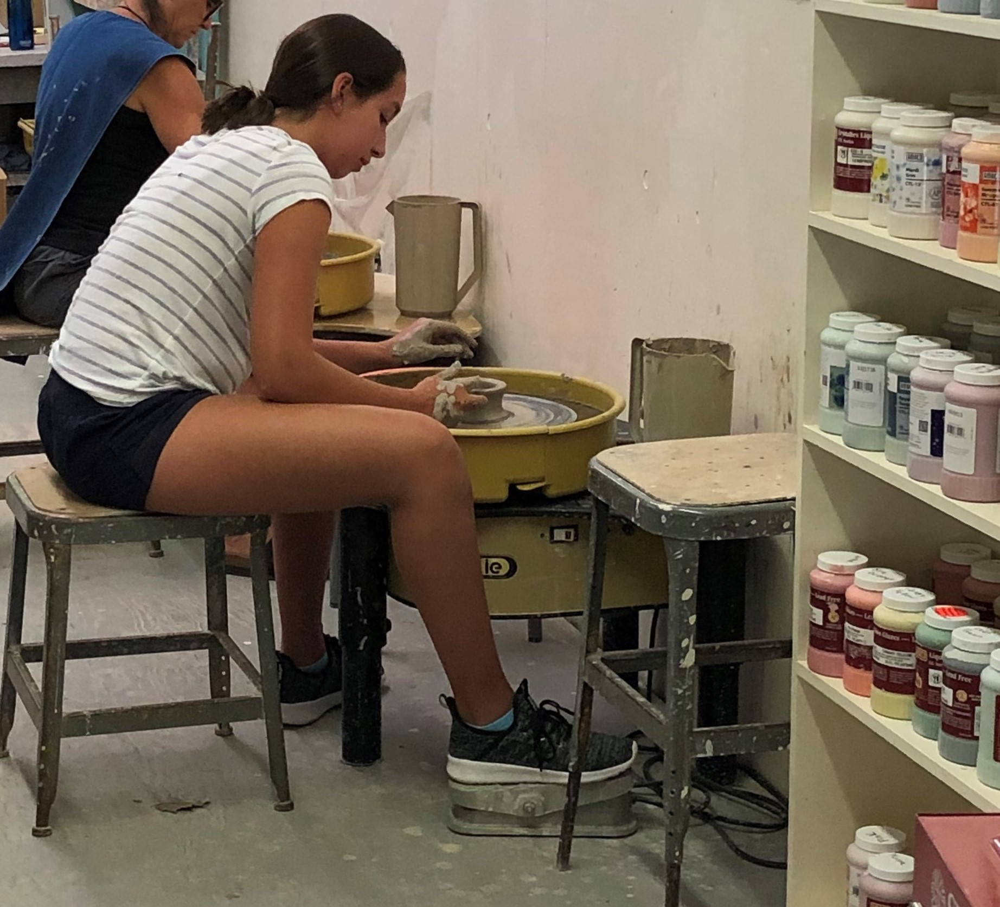

Hello, I'm Anna,
a Ceramic Artist

A Bit About Me:
My love for ceramics started with a third grade ceramics class I took with friends. In high school, I took Ceramics I, Ceramics II, and eventually AP 3D Art and Design through an independent study. I continue to pursue ceramics as a passion now. Since my third grade class, I have advanced my world of ceramics from what was just a fun extracurricular activity, to what now is a favorite hobby. For the 2021 school year, my AP portfolio concentration was how bacteria and pathogens can change the way something is growing and moving. This concentration was inspired by my favorite artist, Kathleen Ryan. Ryan creates large sculptures typically made up of very tiny beads. My favorite piece from Ryan is the rotten fruit sculputres with colored beads symbolizing the ripe and moldy sides of these fruits. Now, I typically create functional pieces for friends and family, I also enjoy experimenting with form and functionality. Aside from ceramics, I also enjoy working with sculptural pieces and computer graphics, featured in the Other Works section.